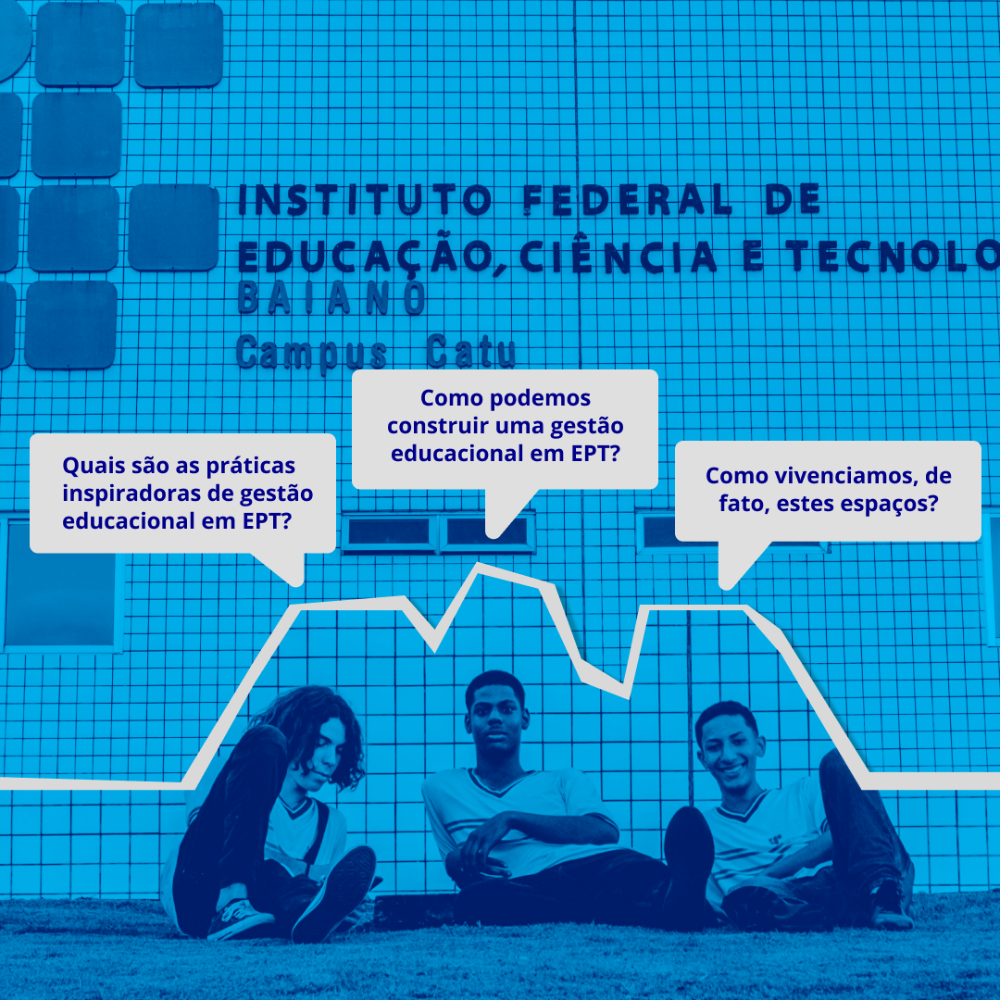
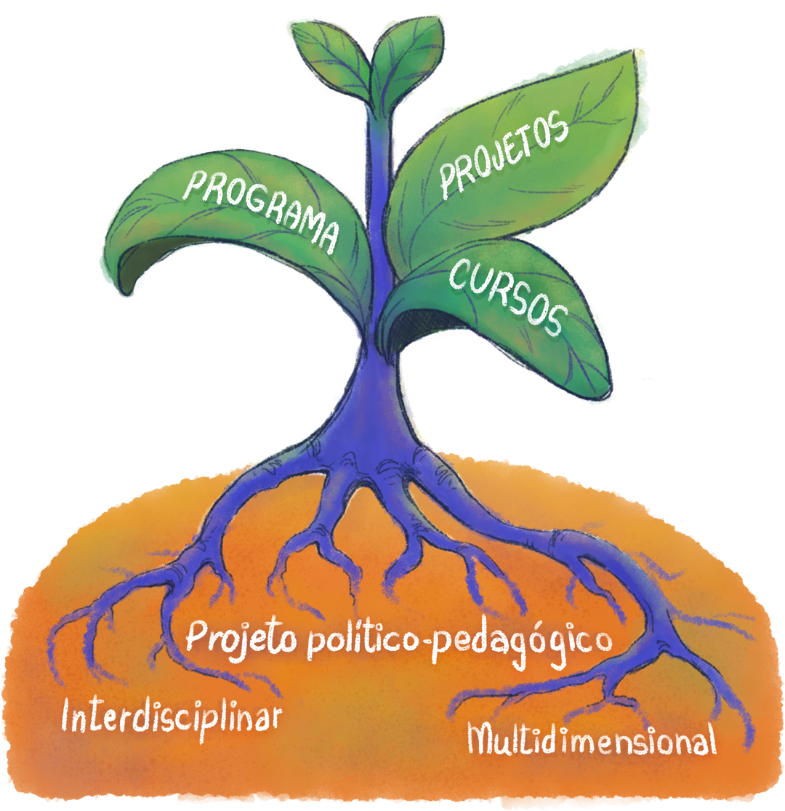

CAPÍTULO 5
Construção da Gestão Educacional na EPT
Agora, mais do que nunca em nossa nação, precisamos que educadores transformem as escolas em espaços onde as condições para a consciência democrática possam se estabelecer e florescer.
Em nossa nação, os sistemas educacionais têm sido o principal espaço onde liberdade de expressão, divergências e opiniões plurais são valorizadas na teoria e na prática.
(bell hooks, Ensinando pensamento crítico: sabedoria prática)
Bell Hooks, professora, escritora e intelectual pública, no livro Ensinando pensamento crítico: sabedoria prática (2021), narrou uma realidade e uma necessidade dos Estados Unidos sobre as escolas tornarem-se espaço por excelência para vivenciar a democracia. Acreditamos que é preciso resgatar estes espaços também nas escolas do Brasil e, devido às particularidades da Educação Profissional e Tecnológica (EPT), esses ambientes podem, do mesmo modo, ser potenciais espaços para vivência de valores democráticos, tanto nos discursos como nas práticas institucionais e locais, tal como cursos, organização de professores e grupos de estudantes.
Os espaços da EPT, como lugares de projetos de educação integral e emancipatória, têm o compromisso de proporcionar tempos e espaços para uma gestão de fato democrática. Por isso, é necessário que todos os sujeitos envolvidos no processo educativo compreendam isso como um princípio, assumindo a responsabilidade de defendê-lo e vivenciá-lo de forma coletiva.
Assim, acreditamos que esse processo educativo requer uma gestão que seja devidamente planejada. Gabriel Grabowski (2014), ao destacar o tema, ressalta que, na EPT e em outras modalidades e níveis, o planejamento e a gestão devem ser exercitados não enquanto conteúdos programáticos, mas como espaços de aprendizagem (vivências e práticas pedagógicas), operando na perspectiva de integração do conteúdo, com o método e a forma, ou seja, precisamos aprender diariamente a gerir e a planejar como uma atividade implícita ao nosso trabalho.

Título: Questões sobre Gestão Educacional na Educação Profissional e Tecnológica
Fonte: Schüler (2023).
Elaboração: Prosa (2025a).
Este capítulo tem como objetivo compreender a relevância das relações interpessoais dos envolvidos no processo educativo, por meio do estudo destas relações e da ética no exercício profissional dos gestores, professores e demais profissionais da educação. Ao engajar-se no trabalho na EPT, será possível construir e viver experiências inovadoras que permitam a indissociabilidade entre o ensino, a pesquisa e a extensão.
No decorrer de todo material desenvolvido para o componente curricular Gestão Educacional na EPT, defendemos a valorização de todos os sujeitos que compõem o campo da modalidade e o desenvolvimento de espaços de vivência da democracia. Portanto, as relações interpessoais são os espaços mais mobilizadores dessa gestão que valoriza o pedagógico. Servidores com clareza de sua função social, com pertencimento em relação aos valores e objetivos da instituição, estarão mais engajados e dispostos a construir os espaços e a trabalhar para vencer os desafios. Estarão também motivados a propor inovações tanto no ensino, na pesquisa e na extensão quanto na gestão. É muito importante ressaltar que o diretor escolar é o líder da gestão, mas todos os servidores e estudantes são corresponsáveis por construí-la e vivê-la.
Na pesquisa de doutorado de Mariglei Maraschin, intitulada “Dialética das Disputas: trabalho pedagógico a serviço da classe trabalhadora?” (2015), a autora aponta três vivências junto de estudantes que foram muito significativas: em uma, o estudante disse que não conseguiu dormir na noite anterior devido à grande motivação pela aula prática, o que o deixou em êxtase; em outra, a estudante relatou que, embora frequentemente pense em desistir por precisar caminhar muitos quilômetros até o campus, sempre se lembra da palestra do diretor no primeiro dia de aula, quando ele afirmou que era um direito dos estudantes estarem naquele curso, uma mensagem que a motiva a continuar; e em outra, ainda, o estudante ressaltou o trabalho dos professores, mencionando que, desde o primeiro dia, eles estudam sobre trabalho e tecnologia, sendo constantemente desafiados pelos professores a se transformarem.
A partir desses relatos, podemos compreender que, na EPT, as aulas práticas são fundamentais e o nosso trabalho é decisivo para a permanência dos estudantes. Mas como é possível chegar a estas experiências? Com Trabalho coletivo, formação e clareza dos fundamentos nacionais da política de EPT e dos fundamentos institucionais e de curso.

Título: Vivências de estudantes da/na EPT
Fonte: Maraschin (2015).
Elaboração: Prosa (2025b).
Construir uma gestão educacional em EPT exige a elaboração de propostas e a implementação de ações que promovam a formação integral, a vivência da gestão democrática e a efetiva participação de todos. Assim, retoma-se que o propósito das instituições da EPT, segundo Antônia Bussmann (1995), não é ser administrada, supervisionada e inspecionada, mas ser o espaço-tempo da prática pedagógica em que os estudantes se relacionam entre si, com professores, com ideias, valores, ciência, arte, cultura, livros e equipamentos, com problemas e desafios, concretizando a missão da escola de criar as oportunidades para que eles se desenvolvam, construam e reconstruam o saber. Antes de avançarmos, vamos resgatar o conceito de "gestão”, que vimos no capítulo 1:
Gestão é um termo que provém do latim e significa: levar sobre si, carregar, chamar a si, executar, exercer, gerar. Trata-se de algo que implica o sujeito e um dos substantivos derivado deste verbo nos é muito conhecido. Trata-se de gestatio, ou seja, gestação, isto é: o ato pelo qual se traz dentro de si algo novo e diferente: um novo ente. Ora, o termo gestão tem sua raiz etimológica em ger que significa: fazer brotar, germinar, fazer nascer. Da mesma raiz provêm os termos: genitora, genitor, germen
Portanto, pela gestão educacional na EPT, temos a oportunidade de fazer brotar uma nova forma de fazer e viver a educação. Em outras palavras, por meio de um projeto político-pedagógico interdisciplinar e multidimensional, temos a possibilidade de planejar formas democráticas de organização e funcionamento da instituição, de um curso, de programas e de projetos, incluindo as relações de trabalho que devolvam à escola seus principais agentes ou trabalhadores: estudantes e professores, coadjuvados direta e permanentemente pelos pais, também trabalhadores – e que representam e trazem consigo a realidade circundante, por dela serem parte (Bussmann, 1995).

Título: Novas formas de fazer e viver a educação
Fonte: Prosa (2025c).